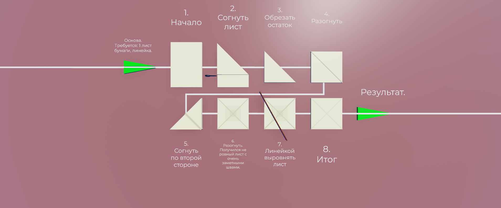
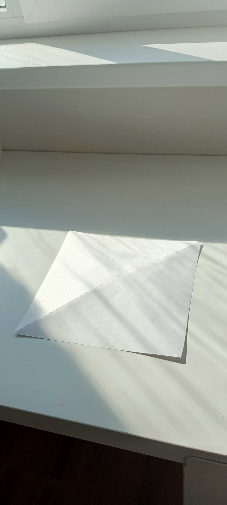
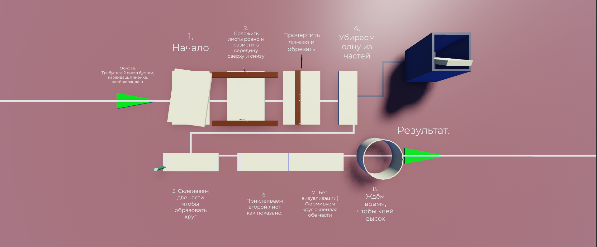
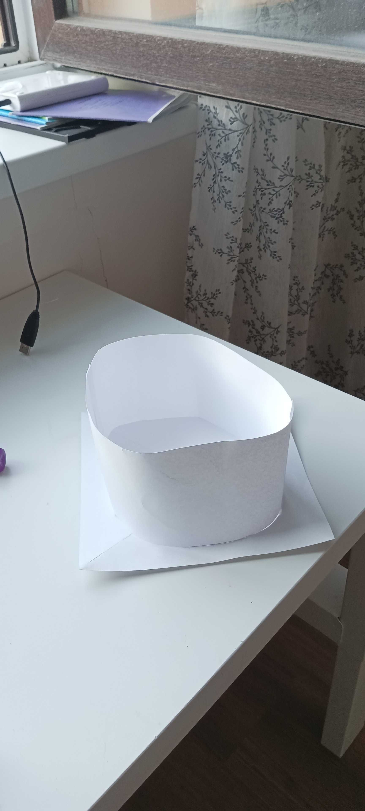
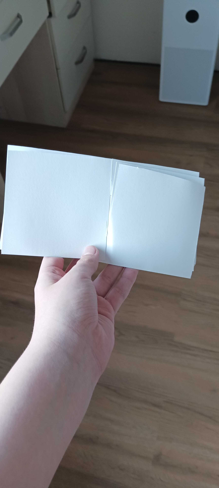
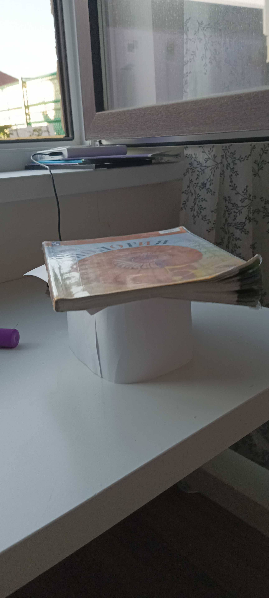
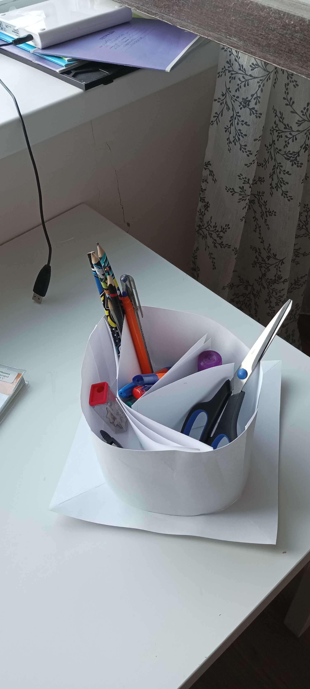

МБОУ СОШ №11
г. к. Анапа (с. Супсех)
ТВОРЧЕСКИЙ ПРОЕКТ
по предмету «Технология»
Тема: «Органайзер Монолит»
Фото не из реальности, было создано в программе Blender как план или чертёж.
Выполнил: ученик 5 «Г» класса
Мараков Григорий Евгеньевич
Дата: 12.05.2026
Содержание
Раздел 1. Обоснование выбора творческого проекта ....................... 3
Раздел 2. Цель проекта (цель и задачи) ............................................... 3
Раздел 3. Историческая справка ........................................................... 4
Раздел 4. Разработка возможных вариантов и выбор одного ............. 4
Раздел 5. Описание собственной работы над проектом ....................... 5
Раздел 6. Достоинства и недостатки проекта ....................................... 9
Раздел 7. Оценка себестоимости изделия ............................................. 9
Раздел 8. Техника безопасности и организация рабочего места ........... 9
Раздел 9. Моя реклама ........................................................................... 10
Раздел 10. Использованная литература ................................................. 10
Раздел 1. Обоснование выбора творческого проекта (формирование проблемы)
Основной проблемой, с которой я столкнулся, стал беспорядок на рабочем столе. Большое количество ручек и карандашей постоянно теряются, что мешает быстро приступить к выполнению заданий. Я решил разработать органайзер, который соберет всё в одном месте.
Выбор пал на бумажный инжиниринг, так как это доступный способ создать прочную вещь без использования дорогого картона. Проект называется "Монолит", что означает целостность конструкции.
Раздел 2. Цель проекта (цель и задачи)
Цель проекта: самостоятельно изготовить изделие из имеющихся материалов с помощью инструментов за отведенное время.
Задачи проекта:
- а) Разработать конструкцию изделия, изготовить чертежи и технологическую карту.
- б) Подобрать подходящий материал для изготовления.
- в) Изготовить изделие, пользуясь разработанной документацией.
Раздел 3. Историческая справка
Подставки для письма появились очень давно. С развитием бумажного дела в Европе возникли настольные приборы с чернильницами. Сегодня большинство таких вещей делают из пластика, но экологичный подход заставляет нас возвращаться к бумаге.
Раздел 4. Разработка возможных вариантов и выбор одного варианта изделия
Для поиска формы я использовал Blender. На схеме ниже представлен вид сверху моей финальной модели. Серый цвет выбран для того, чтобы сфокусироваться на геометрии внутренних перегородок.
Фото не из реальности, было создано в программе Blender как план или чертёж.
Я выбрал вариант модульной сборки, где секции настраиваются под нужды пользователя.
Раздел 5. Описание собственной работы над проектом
5.1 Подготовка материалов и инструментов
Для изготовления мне понадобились: листы плотной бумаги (6 шт.), клей-карандаш, линейка, простой карандаш, ножницы.
5.2 Создание технологической карты изготовления изделия
Этап 1: Создание основы. Я взял бумагу за правый верхний край и протянул его до образования идеального прямоугольника. Лишнюю часть отрезал, получив квадрат. Чтобы убрать шов сгиба, я сложил его повторно по другой стороне. Выровнял лист линейкой.

Фото не из реальности, было создано в программе Blender как план или чертёж.

5.2 Продолжение технологической карты (Этап 2)
Этап 2: Создание корпуса. Разрезал два листа пополам. Одну из частей убрал. Оставшиеся два листа склеил между собой по краям. Когда клей высох, согнул заготовку в круг и склеил края, сформировав цилиндр.

Фото не из реальности, было создано в программе Blender как план или чертёж.

5.2 Продолжение технологической карты (Этап 3)
Этап 3: Создание секций. Разрезал 2 листа пополам, получив 4 части. Обрезал их до 20 см в ширину. Прорезал пазы по принципу пирамиды:
- 1-я деталь: отступ 2 см снизу, рез сверху.
- 2-я деталь: резы на уровнях 2 см и 4 см.
- 3-я деталь: на 2 см выше предыдущих (4 см и 6 см).
- 4-я деталь: рез снизу на 8 см.
Фото не из реальности, было создано в программе Blender как план или чертёж.

5.3 Выполнение практической части проекта
Намазал квадратную основу клеем, установил на неё бумажный цилиндр и зафиксировал под прессом (учебником). Через 5 минут вставил внутрь готовую крестовину секций. Секции не приклеены к стенкам, что позволяет их настраивать.


Раздел 6. Достоинства и недостатки проекта
Достоинства: органайзер легкий, дешевый и модульный. Недостатки: из-за гибкости бумаги круг получился не идеальным, но это стало фишкой дизайна.
Раздел 7. Оценка себестоимости изделия
Общие затраты: 22 рубля (клей и бумага). Экономия по сравнению с покупкой в магазине — более 90%.
Раздел 8. Техника безопасности при работе, организация рабочего места
Рабочее место было очищено от лишних предметов. Соблюдал правила ТБ: ножницы передавал кольцами вперед, клей использовал аккуратно.
Раздел 9. Моя реклама
ОРГАНАЙЗЕР МОНОЛИТ
Порядок на столе — порядок в мыслях! Спроектирован в цифре, создан своими руками.
Раздел 10. Использованная литература
- Google AI Studio — https://aistudio.google.com/. Данная ИИ использовалась для упрощения поиска информации в интернете, исправления грамматических ошибок в моем тексте и автоматизации верстки HTML файла. Работа составлена и выполнена ТОЛЬКО мною.
- Программа Blender 3D — использовалась для проектирования цифровых схем и чертежей изделия.